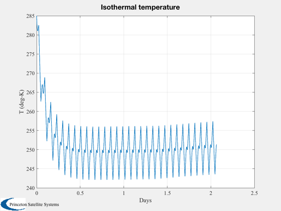

Isothermal satellite demo
The entire CubeSat is assumed to be at the same temperature. This is a very useful first approximation of the spacecraft temperatures on orbit. The oscillations in the temperatute reflect the eclipses.
Model a 3U satellite with different materials comprising the faces. Each area is 1U for a total of 14 surfaces. The surfaces are either solar cell, gold foil, or radiator.
See also RHSThermalCubeSat.
Contents
%------------------------------------------------------------------------ % Copyright (c) 2009-2010,2014 Princeton Satellite Systems, Inc. % All rights reserved. %------------------------------------------------------------------------
Spacecraft model - 3U with various materials.
Each long face (X/Y) has 2 panels with solar cells and 1 with foil. The +/- Z ends are assumed to have radiators. The specific heat of aluminum is used as a good approximation for the bulk spacecraft properties.
% solar cell properties aC = 0.8; % absorptivity eC = 0.82; % emissivity % Goldized Kapton properties aG = 0.3; eG = 0.04; % Radiators aR = 0.15; eR = 0.8; % Data structure d = RHSIsothermalCubeSat; d.mass = 3; d.uSurface = [1 1 1 -1 -1 -1 0 0 0 0 0 0 0 0;... 0 0 0 0 0 0 1 1 1 -1 -1 -1 0 0;... 0 0 0 0 0 0 0 0 0 0 0 0 1 -1]; d.alpha = [aC aG aC aC aG aC aC aG aC aC aG aC aR aR]; d.epsilon = [eC eG eC eC eG eC eC eG eC eC eG eC eR eR]; d.area = 0.1*0.1*ones(1,14); % Specific heat for whole spacecraft d.cP = 900; % Power consumption (W) - internal power that is absorbed by the spacecraft d.powerTotal = 3;
Orbit and ephemeris
sma = 7100; p = Period(sma); nP = 3000; t = linspace(0,30*p,nP); el = [sma 0*pi/180 0 0 0 0]; [r,v] = RVFromKepler( el, t ); jD = Date2JD([2013 4 4 0 0 ]) + t/86400; q = QLVLH( r, v );
Integrate the isothermal RHS over the orbit
% Initial temperature t0 = 285; t(1) = t0; dT = (jD(2) - jD(1))*86400; n = zeros(1,nP); for k = 2:nP sigma = 5.67e-8; [uSun, rSun] = SunV1( jD(k) ); flux = QForm( q(:,k), 1367*uSun ); n(k) = Eclipse( r(:,k), rSun*uSun, [0;0;0] ); if (n(k)>0) d.powerTotal = 6; else d.powerTotal = 0.6; end t(k) = RK4( @RHSIsothermalCubeSat, t(k-1), dT, 0, d, n(k)*flux ); end
Plot the resulting temperature
Plot2D( jD - jD(1), t, 'Days', 'T (deg-K)', 'Isothermal temperature'); %--------------------------------------